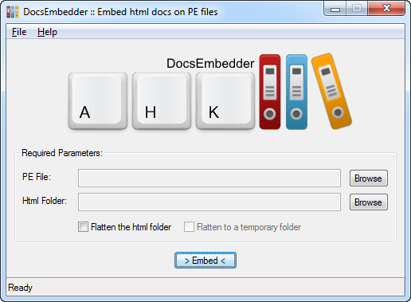
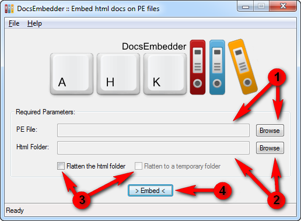

DocsEmbedder
PLEASE NOTE THAT THIS IS BETA SOFTWARE. I'M IN NO WAY RESPONSIBLE FOR ANY DATA LOSS.

DocsEmbedder is a tool that allows to embed a set of documentation files, html related, inside a PE (portable executable) file. The documentation can then be referenced and visualized using the res:// protocol with a compatible browser or ActiveX control.
One of the way to embed a documentation is to write the desired markdown files, build a site with MkDocs and then embed the resulting files with DocsEmbedder, flattening them first. This document is actually embedded in the binary release of DocsEmbedder and can be visualized clicking on its Help menu item.
How it works
DocsEmbedder loops over a desired directory, loading all files and embedding them inside the desired PE file, through the Win32 UpdateResource function. Because of a documentation site being often structured in multiple subfolders, DocsEmbedder can flatten the desired directory, moving all subfolders files to the root directory and changing all the href and src attributes in the html files according to the new structure. A temporary folder can be used to avoid any change to the actual files.
DocsEmbedder can embed the files in a pre-existing PE file or generate a new one with the desired name and extension. The generated file is a hardcoded executable, compiled with Visual C++ 2010 Express, optimized to keep the size less than 1 KB. If run, the generated executable shows a message box and returns.
Remarks
-
There could be issues if the documentation is embedded on a compressed executable that already contains resources. The correct behaviour would be to embed the documentation first and then compress the executable, or use a standalone file.
-
The site must be flat (all the resources must reside in the root folder) because of the limitations of the PE format. The flattening feature of the program must be used if the documentation site cannot be organized in a single flat folder.
-
All the resources will be stored inside the PE file using their filename (with extension) as resource name, RT_HTML as resource type and a neutral language identifier.
-
Because of some limitations of the res:// protocol, filenames cannot contain exclusively digits (or/and spaces), so they must be named carefully. E.g. "001.png" doesn't work, "img001.png" works.
-
The embedded files can be referenced only by a compatible viewer (like Internet Explorer).
Setup and usage
There is nothing to setup in DocsEmbedder. It is ready to use:

-
Select the desired PE file, clicking on the first Browse button. If you want to use a standalone file, just use a free filename in the current directory, no matter the extension.
-
Select the desired folder containing the html related files, clicking on the second Browse button.
-
Flag the "Flatten the html folder" checkbox if you need to flatten the selected folder. If you don't want to modify the source files, flag the "Flatten to a temporary folder" checkbox.
-
Click on the Embed button and wait for the popup confirmation.
The documentation can now be accessed on any client compatible with the res:// protocol, using the following address:
res://C:\path\to\pefile/resourcename
E.g. If the choosen PE file is test.exe and the embedded resource is index.html, the address is the following:
res://C:\path\to\test.exe/index.html
License
DocsEmbedder is released under the terms of the GNU General Public License. The program logo contains an icon from the Pretty Office Icon Set Part 7, released under the term of CustomIconDesign License Agreement.
Contact
For hints, bug reports or anything else, you can contact me at focabresm@gmail.com, open a issue on the dedicated GitHub repo or use the AHKscript development thread.